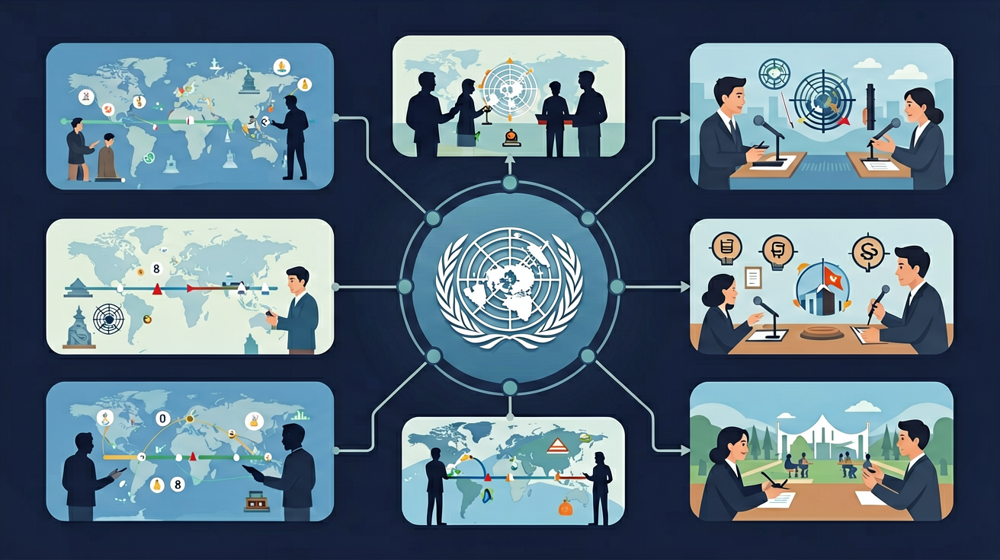
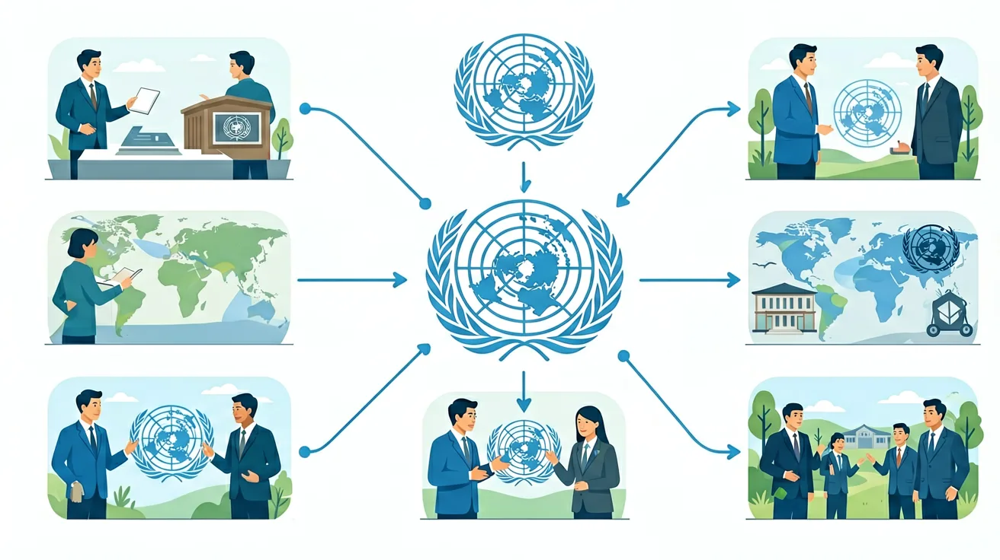

初三历史 · 世界现代史 · 新知课
❓ 为啥联合国成立时只有51个会员国，现在却有193个？
❓ 联合国安理会常任理事国为啥有否决权？这公平吗？
❓ 老师说联合国维护和平，但为啥有些战争还是发生了？
学完这一课，这些问题你都能自信地回答。
🎯 能说出联合国成立的三大背景原因
🎯 能判断安理会常任理事国的核心权利与义务
🎯 能分析联合国维和行动成功与失败的典型案例
本课将探讨联合国诞生的历史背景、运作机制，以及它在维护世界和平中的作用与局限，帮助你理解当今国际秩序的来龙去脉。
第一次世界大战后，国际联盟成立，却因美国拒绝加入、大国不受约束而失败，未能阻止第二次世界大战爆发。二战造成约7000万人死亡，是人类历史上规模最大的战争。痛定思痛，各国领导人认识到：必须建立一个更有权威、更具代表性的国际组织，通过集体安全机制，共同维护世界和平。
1945年10月24日，联合国正式成立，总部设于美国纽约。联合国由六大主要机构组成：大会、安全理事会、秘书处、经济及社会理事会、国际法院、托管理事会。其中安理会是核心决策机构，美、俄、英、法、中5个常任理事国拥有否决权，任一常任国否决即可阻止决议通过。
联合国在维和行动、人道主义救援、推动国际法发展等方面发挥了重要作用。截至2024年，联合国已开展70余项维和行动。然而，安理会的否决权机制也造成了大国博弈的僵局：冷战期间苏美频繁动用否决权，使安理会在朝鲜战争、越战等问题上难以发挥作用。大国利益冲突是联合国最大的结构性局限。
苏联临时抵制安理会期间，美国主导安理会通过决议，以"联合国军"名义出兵朝鲜。这是联合国集体安全机制的重要案例，但也引发争议——是真正的联合国行动还是美国主导？
复杂案例伊拉克入侵科威特后，安理会授权多国联军采取行动。这被视为冷战结束后联合国集体安全机制发挥作用的成功案例，也是战后国际秩序得以维护的例证。
有效运作俄罗斯和中国多次在安理会动用否决权，阻止西方主导的对叙制裁决议。这导致安理会在叙利亚问题上长期陷入僵局，暴露了否决权机制在大国分歧时的局限性。
局限显现联合国推动通过了《世界人权宣言》（1948年）、《不歧视公约》等重要法律文书，在人权标准建立、难民保护（UNHCR）等领域发挥了无可替代的作用。
积极贡献你已完成《联合国与战后国际秩序》全部内容
📌 核心要点回顾：
① 两次世界大战教训 → 国际联盟失败 → 联合国成立（1945）
② 六大机构：安理会（核心）+ 大会 + 秘书处 + 法院等
③ 否决权：保障大国参与，但也可能造成僵局
④ 联合国贡献：维和、人权、国际法；局限：大国博弈
点击地图上的标注点，查看具体历史事件和地理位置。
点击标注点查看详情
鼠标悬停在节点上查看详情
点击时代按钮切换疆域版图；悬停高亮边界；点击红色城市标记查看详情。
这段动画围绕"联合国如何试图防止第三次世界大战？"展开，依次说明核心问题、关键事件、易错诊断和迁移应用。
先独立作答，再点选项查看对错与错因。
联合国成立的主要目的是什么？
下列哪项是联合国安理会的主要职责？
联合国与国际联盟的主要区别是什么？
联合国成立于____年，总部设在____。
答案：1945,纽约
联合国成立于1945年，总部设在美国纽约。
联合国安理会常任理事国包括中国、美国、____、____和英国。
答案：俄罗斯,法国
联合国安理会五个常任理事国是中国、美国、俄罗斯、法国和英国。
下列哪项最能体现联合国在国际秩序中的作用？
调查联合国维和行动在某一地区的实施情况，分析其对当地和平与安全的影响。
将联合国比喻为班级管理小组，安理会=班委会，大会=全班会议
否决权如同班级重大决策需全体班委同意，防止多数人压制少数
对比国际联盟与联合国：前者无强制力，后者有维和部队
通过叙利亚危机案例，观察大国博弈如何影响联合国决策
设计校园调解方案时借鉴联合国斡旋机制
✅ 联合国是协调机构，决议需成员国自愿执行
💡 混淆国际组织与主权国家权力性质
✅ 1971年恢复合法席位前由台湾当局占据
💡 混淆政权更迭与国际法主体延续性
口诀：五常否决定乾坤，维和蓝盔护太平
类比：联合国像小区物业：收物业费（会费）、调解邻里纠纷（国际冲突）、但修电梯（重大改革）需全体业主同意
联合国成立的主要直接原因是？
下列哪项不是安理会常任理事国权利？
复制提示词到 AI 学伴，生成「联合国与战后国际秩序」的时间轴或事件提纲；也可以上传你手绘的示意图，请 AI 学伴点评。
复制后可粘贴到 AI 学伴继续对话。
（中考题）根据《联合国宪章》，主权平等原则体现于？
若某国申请加入联合国，需经过哪些程序？
（迁移题）学校模拟联合国讨论校园霸凌问题，最应借鉴？
And：学生知道二战很惨烈
But：但不懂为啥打完要搞联合国
Therefore：弄懂联合国的诞生逻辑
1945年二战死了7000多万人，各国痛定思痛：不能再靠打架解决问题了！就像班里打架后老师组织班会，51个国家在旧金山开了联合国制宪会议。最关键是设计了'大国一致'原则——安理会五常（中美俄英法）任何一国反对，决议就通不过，避免了再次群殴。比如2014年俄罗斯否决克里米亚问题提案，就是这套机制在运作。
🌍 就像咱们班定班规，如果班长和小组长都同意才能改规则，联合国就是全球版的'班规制定会'。去年土耳其地震时，联合国3天内协调78个国家派出救援队，这就是它日常在忙的事。
联合国成立时有多少创始会员国？

And：学生知道二战很惨烈
But：但不懂为啥打完要建联合国
Therefore：搞懂联合国是防战新方案
1945年二战死了7000多万人，各国怕再打第三次世界大战。就像班里打架后要定班规，51个国家在旧金山开了联合国制宪会议。最关键是安理会'五常'（中法俄英美）有一票否决权，比如2022年俄罗斯就用它阻止了制裁自己的提案。
🌍 就像学校运动会，裁判组（联合国）要提前定好规则。去年篮球赛因为没规则，3班和5班差点打起来，今年就学聪明了。
联合国成立直接是为了解决什么问题？